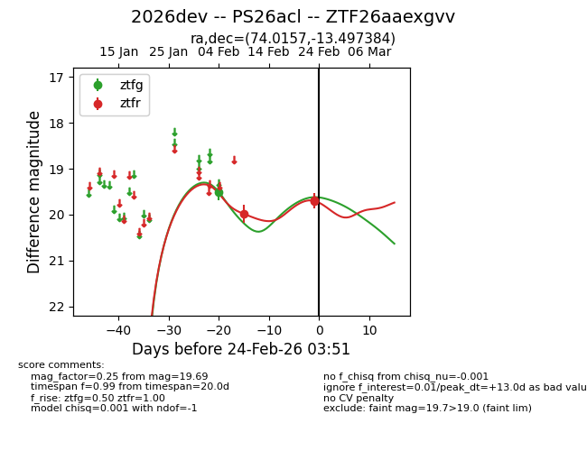
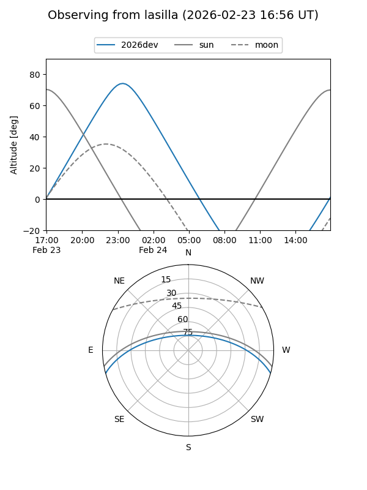
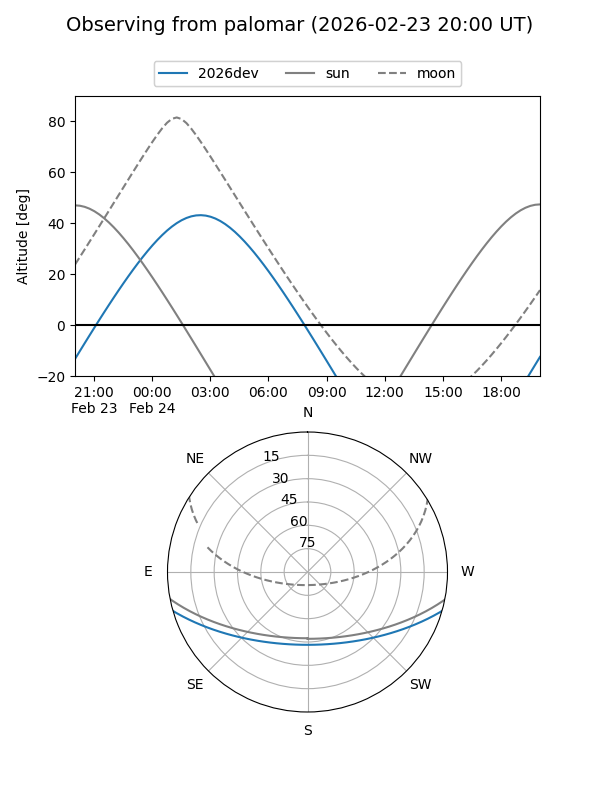

2026dev
Target 2026dev at 2026-02-24 09:08
Aliases and brokers:
FINK: link
Lasair: link
ALeRCE: link
TNS: link
YSE: link
alt names
ZTF26aaexgvv (ztf,fink_ztf)
2026dev (tns,yse)
PS26acl (panstarrs)
Coordinates:
equatorial (ra, dec) = 74.0157,-13.49738
equatorial (HMS+DMS) = 04:56:03.76,-13:29:50.58
galactic (l, b) = (212.5164,-31.59557)
Flags:
Photometry:
last ztfg=19.50, ztfr=19.69
1 ztfg, 3 ztfr detections
Lightcurve

Visibility


Additional plots